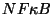

 est présent dans la plupart des cellules sous forme inactive, confiné dans le cytoplasme, dans un complexe avec , protéine inhibitrice qui empêche d'entrer dans le noyau.
paraît dissociable de par des modifications diverses: phosphorylation via une kinase, diphosphorylation, ou oxydation.
Une fois dissocié de , peut entrer dans le noyau de la cellule, où il permet la transcription de la protéine . La protéine passe ensuite dans le cytoplasme où elle s'associe avec .
Dans le modéle, on suppose que la dissociation est induite par phosphorylation via une kinase dont la présence est considérée comme l'effet direct du signal extérieur.
Expérimentalement, lors de l'application continue du stimulus, on observe un comportement oscillant amorti du niveau de nucléaire en fonction du temps. On aimerait reproduire ceci par un modéle simple.
On propose deux modéles: le premier est non-compartimenté et ignore le fait que doive circuler entre le cytoplasme et le noyau, le deuxième est compartimenté et prend en compte un délais dû au transfert cytoplasme-noyau.